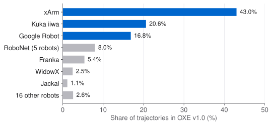
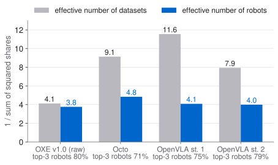

An audit of the Open X-Embodiment data, and of the training mixtures that Octo and OpenVLA drew from it, from public metadata only. Three robots hold most of the trajectories, and the mixtures spread the data across datasets but not across robots.
Experimental design
Open X-Embodiment (OXE) pools 60 datasets from 22 robots. RT-X, Octo, OpenVLA and π0 train on it for transfer across robots. Whether pooling helps a robot may depend on how much of the data comes from each robot, not only on how many robots are listed.
Hypothesis. A few robots and datasets hold most of the trajectories. The mixtures that later models trained on reweight the datasets, but they stay concentrated on a few robots.
Implementation
| Sheet | The OXE dataset overview and metadata tabs, linked from the project site: robot, episodes, control rate, action space, cameras, language, operator, scenes. |
|---|---|
| TFDS | dataset_info.json and features.json for 69 datasets on gs://gresearch/robotics: split sizes, action and camera features. |
| Mixtures | Octo's OXE_MAGIC_SOUP and OpenVLA's oxe_magic_soup_plus and oxe_magic_soup_plus_minus at pinned commits, with the dataset statistics of the released checkpoints. |
| Papers | The text of OXE, Octo, OpenVLA and π0. The script checks all 23 quotes it uses against the text. |
| Measures | Top-k share and the effective number, 1 / (sum of squared shares): 5 means "as spread as 5 equal parts". Both codebases sample a dataset in proportion to its weight times its number of steps, and the audit does the same. |
2.3 MB of metadata and no episodes. One script rebuilds every number and chart on this page from the downloaded files.
Reproduction
| Claim | Paper | From the metadata |
|---|---|---|
| Datasets | 60 | 60 rows marked v1.0 |
| Robots | 22 | 22 named; Figure 2 likely counts RoboNet ("data from 5 robots") once per robot and leaves out ALOHA |
| Trajectories | 1M+ | 1,403,481 as listed; 1,032,969 with non-empty Kuka episodes |
| Labs, skills, tasks | 34, 527, 160,266 | Not in the metadata |
The sheet lists QT-Opt (Kuka) with 580,392 episodes, but the Octo and OpenVLA loaders count 209,880 non-empty ones. With the listed number, Kuka is the largest robot (41.6%), which contradicts Figure 2(c). With the non-empty number the figure matches: xArm 43.0% (figure about 43%), Kuka 20.6% (about 21%), Google Robot 16.8% (about 17.5%). The rest of this page uses the non-empty count.
Empirical observations


| Distribution | Effective datasets | Effective robots | Top-3 robots | Which three |
|---|---|---|---|---|
| OXE v1.0 trajectories | 4.1 | 3.8 | 80.5% | xArm, Kuka iiwa, Google Robot |
| Octo sampling | 9.1 | 4.8 | 70.7% | Franka, Google Robot, WidowX |
| OpenVLA stage 1 (DROID at 10%) | 11.6 | 4.1 | 75.1% | Franka, Google Robot, WidowX |
| OpenVLA stage 2 (released model) | 7.9 | 4.0 | 79.1% | Google Robot, Franka, WidowX |
The mixtures move samples between robots more than they add robots. xArm (Language Table) falls from 43% of the trajectories to 5.9% of Octo's samples and is absent from OpenVLA's last stage. Octo keeps the datasets with images and delta end-effector control, and OpenVLA those with a third-person camera and single-arm end-effector control. So the navigation robots, the quadruped, the bimanual setups and the joint-space datasets are never sampled.
Octo. The code's weights times the released dataset sizes give Octo's mixture table to within 0.03 points on average, so the weights in the code are the ones used.
OpenVLA. Table 3 of the paper sums to 95.0%, and each row sits about 5% below the computed share. That fits DROID at about 15% of the samples, not the stated 10%. DROID's step count is not in any released statistics file, so this stays an inference. In the last third of training, the code also drops Language Table and raises the weight of Fractal (RT-1) from 0.54 to 1.0, which the paper does not say: Fractal's share goes from 13.4% to 25.6%, so about one sample in four is RT-1 data.
| Share | OXE v1.0 trajectories | Octo samples | OpenVLA stage 2 samples |
|---|---|---|---|
| Control at 5 Hz or slower | 15% | 37% | 44% |
| Control above 20 Hz | 0.3% | 2.4% | 2.2% |
| No language label | 50% | 26% | 22% |
| Templated language | 12% | 47% | 59% |
| Human operator | 47% | 83% | 86% |
The weighted median control rate is 10 Hz under every weighting. π0's own robots run "at frequencies of up to 50 Hz", and all of π0's open-source data (OXE, Bridge v2, DROID) is "9.1% of the training mixture" (π0, Sec. V-A). π0 does not publish its per-dataset OXE weights, so the audit computes no π0 shares.
Findings vs the paper
Matches. 60 datasets, 22 robots by count and 1M+ trajectories. Franka has the most datasets and the most scenes. xArm, Kuka and Google Robot give the most trajectories. Octo's "only 27% of the data contains wrist camera information" reproduces as 27.3% of its samples.
Does not match. The 22 robots of Figure 2 are not the sheet's 22. In Figure 2(b), Google Robot has 4.4% of the scenes the contributors list, against about 22% in the figure. Octo's "56% of the pretraining data contains language annotations" does not reproduce from the sheet's labels under any weighting. π0 calls its OXE data both "the entire OXE dataset" (Sec. III) and "a subset of OXE, which we refer to as OXE Magic Soup" (Fig. 4).
Challenges & insights
Challenges. The labels are contributors' form answers. Step counts exist only for datasets in a mixture. DROID's step count and π0's per-dataset weights are not published. No episodes were opened, so the 370,512 missing QT-Opt episodes stay unexplained: they may be empty in the public release, or lost in the Octo and OpenVLA copies.
Insights. Cross-robot results from OXE rest on about four effective robots. Reweighting can move samples between robots, but it cannot add robots. The open data is slow: half of it is at 10 Hz or less.
Hypothesis. At a fixed step budget, a mixture balanced over robots transfers better to the robots it under-samples than Octo's mixture does.
Sources. Open X-Embodiment (arXiv:2310.08864v9), Figure 2 and Sec. III–IV; the OXE dataset overview sheet and the TFDS metadata on gs://gresearch/robotics, fetched 1 November 2026 (the sheet's e-mail column and its form-response tab were not downloaded). Octo (arXiv:2405.12213v2) and its code (octo-models/octo, commit 241fb35); OpenVLA (arXiv:2406.09246v3) and its code (openvla/openvla, commit c8f03f4); the dataset statistics of the released Octo and OpenVLA checkpoints on Hugging Face; π0 (arXiv:2410.24164v4). Figure 2 values were read by eye (pie slices about ±1.5 points).